Agile Process Manager
Vollständiges Agile-Projektmanagement mit Scrum, Kanban und Hybrid-Frameworks. Product Backlog, Sprint-Planung, Kanban-Board mit WIP-Limits, Burndown-Charts, Velocity-Tracking und Rollen konform zum Scrum Guide 2020. Alles in einem einzigen kostenlosen Tool — funktioniert auf jedem Gerät.
Kostenlos testen →3 Agile Frameworks
Scrum mit Sprints und Zeremonien, Kanban mit kontinuierlichem Fluss und WIP-Limits, oder hybrides Scrumban, das beide Ansätze kombiniert.
Product Backlog
User Stories mit MoSCoW-Priorisierung, Akzeptanzkriterien, Story Points, Serviceklassen, Abhängigkeiten und Tags.
Metriken & Diagramme
Velocity-Tracking, Burndown/Burnup-Charts, CFD, Lead/Cycle Time, Durchsatz, Sprint Health Score und Analyse der Team-Auslastung.
Scrum-Rollen nach Scrum Guide 2020
Granulare Berechtigungsmatrix: Product Owner, Scrum Master, Development Team. Kanban-Äquivalente: SRM und SDM.
In Aktion sehen
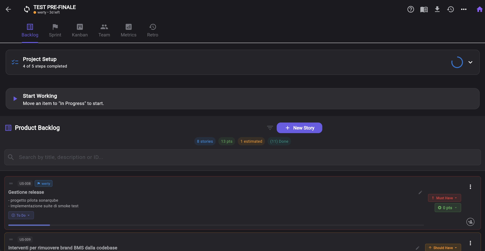
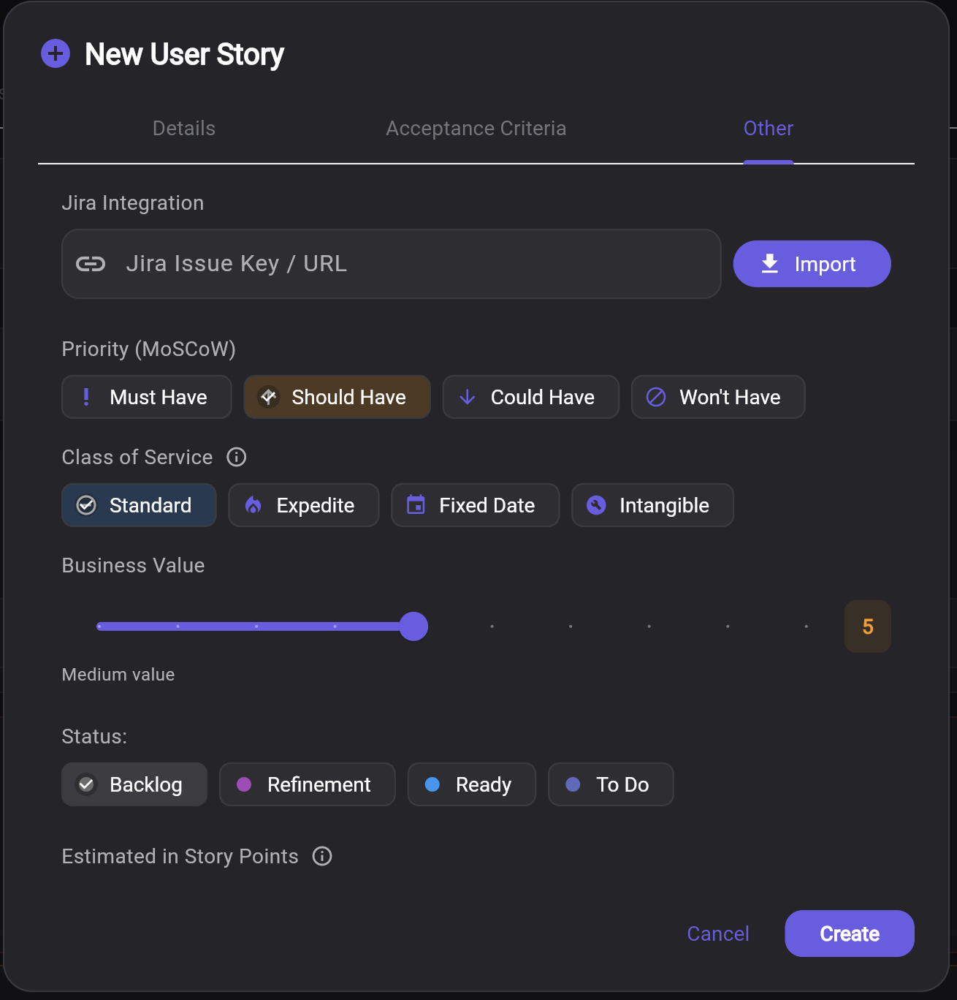
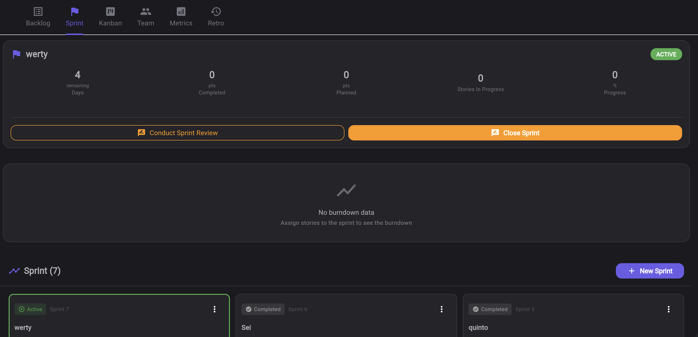
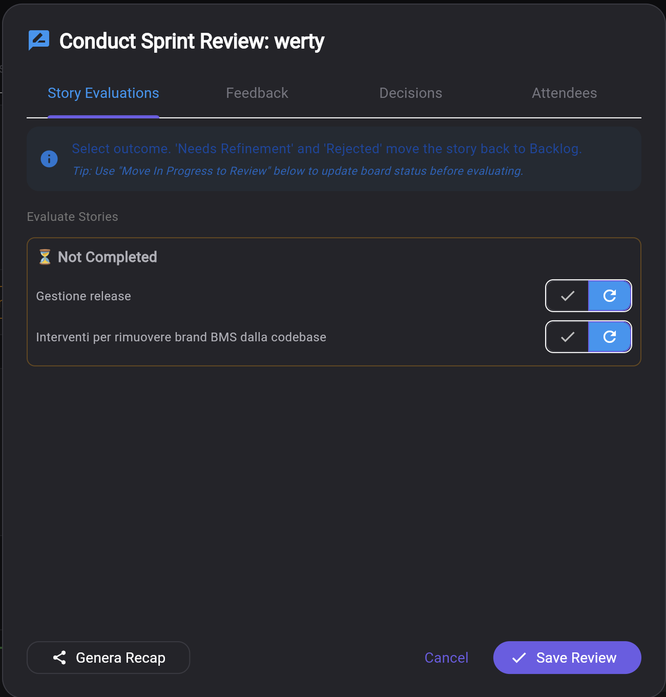
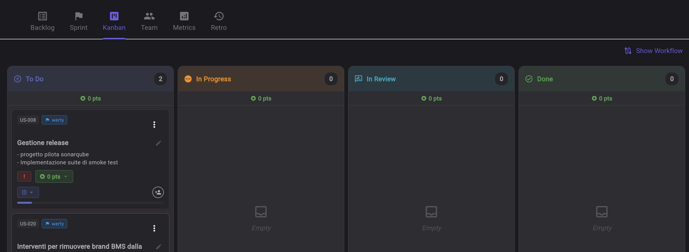
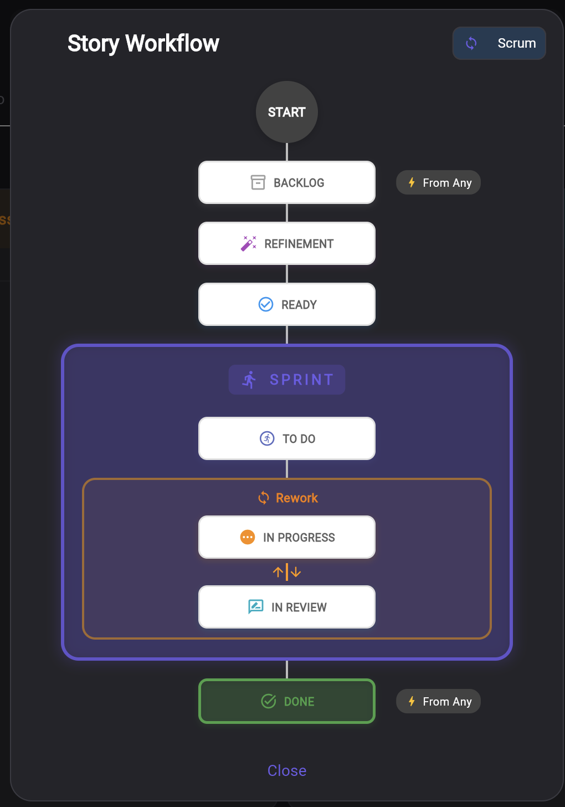
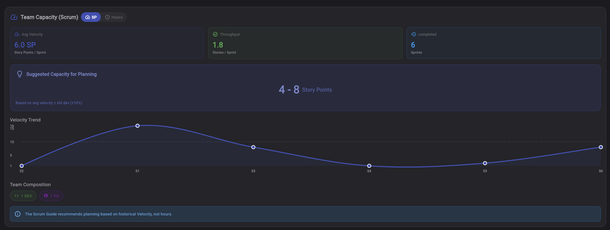
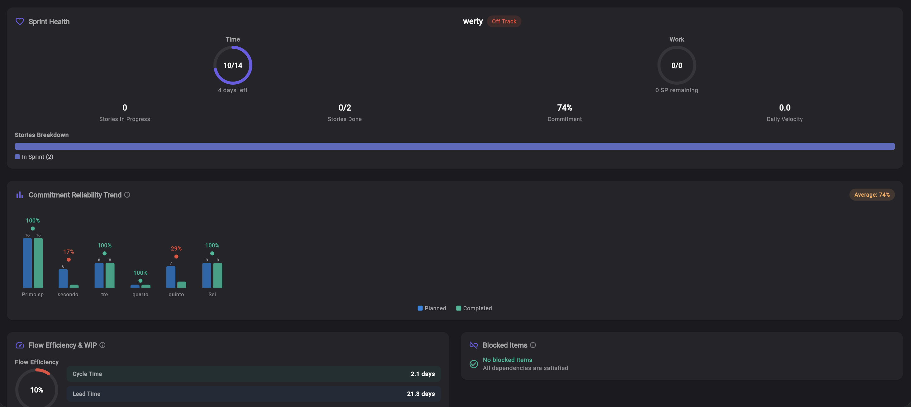
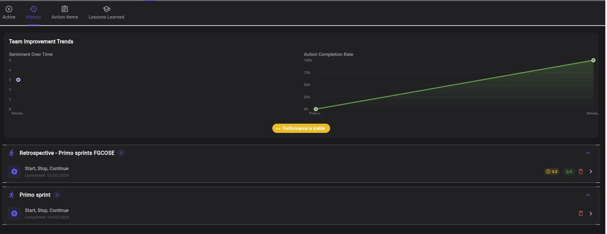
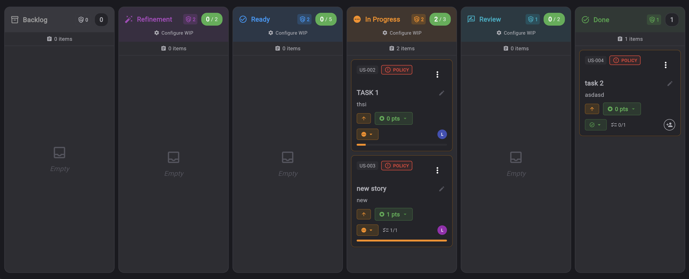
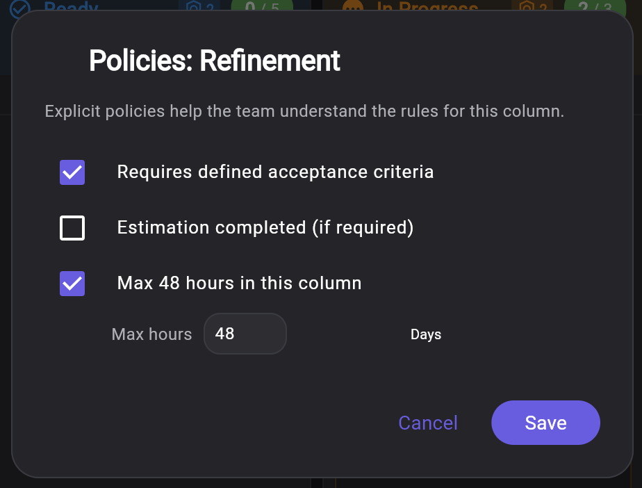
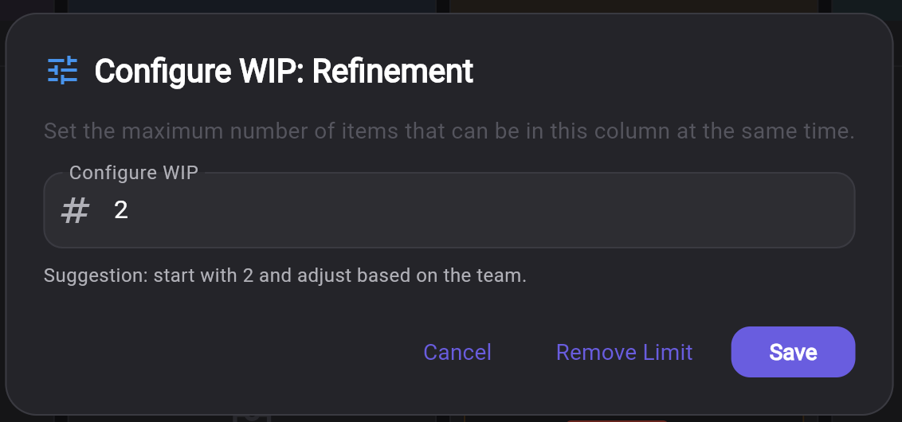
Wie es funktioniert
Framework wählen
Erstellen Sie ein Projekt und wählen Sie Scrum, Kanban oder Hybrid. Jedes Framework enthält dedizierte Spalten, Rollen, Metriken und Workflows.
Backlog aufbauen
Fügen Sie User Stories mit MoSCoW-Priorität, Akzeptanzkriterien, Story Points und Tags hinzu. Schätzen Sie mit dem integrierten Planning Poker.
Sprints oder Fluss ausführen
Planen Sie Sprints mit Teamkapazität, verfolgen Sie den Fortschritt auf dem Kanban-Board, überwachen Sie Burndown und Velocity und starten Sie Retrospektiven.
3 Agile Frameworks, ein Tool
Wählen Sie die passende Methodik für Ihr Team. Wechseln Sie zwischen Frameworks, während sich Ihr Prozess weiterentwickelt.
Scrum
Iterative Entwicklung basierend auf Sprints nach dem Scrum Guide 2020. Sprints mit fester Dauer (1-4 Wochen) mit Planung, Daily Standup, Sprint Review und Retrospektive. Rollen: Der Product Owner verwaltet das Backlog, der Scrum Master moderiert die Zeremonien, das Development Team schätzt und liefert. Verfolgen Sie Velocity und Burndown über die Sprints hinweg.
Kanban
Kontinuierliches Fluss-Management basierend auf der Kanban-Methode von David Anderson. Visualisieren Sie die Arbeit auf einem Board mit anpassbaren Spalten, wenden Sie WIP-Limits (Work In Progress) an, definieren Sie explizite Spaltenrichtlinien und kategorisieren Sie die Arbeit mit Serviceklassen (Standard, Expedite, Fixed Date, Intangible). Verwenden Sie Swimlanes, um Karten nach Bearbeiter, Priorität, CoS oder Tags zu gruppieren. Rollen: Service Request Manager und Service Delivery Manager.
Hybrid (Scrumban)
Kombiniert das Beste aus Scrum und Kanban: Behalten Sie die Sprint-Struktur für den Planungsrhythmus bei, während Sie WIP-Limits und Flussmetriken von Kanban für die tägliche Ausführung nutzen. Optionale Sprints, vereinfachte Zeremonien und Metriken sowohl für Velocity als auch für Durchfluss. Erhalten Sie die Vorhersehbarkeit von Scrum mit der Flexibilität von Kanban.
Framework-Detailanalyse
Jedes Framework enthält angepasste Spalten, Rollen, Metriken und Workflows. So funktionieren sie in Keisen im Detail.
🏃 Scrum — Sprintbasierte iterative Entwicklung
Keisen implementiert Scrum nach dem Scrum Guide 2020 mit vollständiger Zeremonie-Unterstützung und rollenbasierten Berechtigungen.
Sprint-Lebenszyklus (4 Phasen)
- Planung — Der Product Owner wählt Stories aus dem priorisierten Backlog. Das Team schätzt mit dem integrierten Planning Poker und committet basierend auf der Teamkapazität (Stunden pro Mitglied, angepasst an Verfügbarkeit und Urlaub). Die Sprint-Dauer ist von 1 bis 4 Wochen konfigurierbar.
- Aktiv — Das Development Team arbeitet an den committed Stories. Das Kanban-Board zeigt 4 Spalten: To Do → In Progress → In Review → Done. Verfolgen Sie den täglichen Fortschritt mit dem Burndown-Chart (ideal vs. tatsächlich), notieren Sie Daily-Standup-Notizen (Gestern / Heute / Hindernisse) pro Teammitglied und erkennen Sie Hindernisse automatisch.
- Review — Der Scrum Master leitet ein formales Sprint Review nach Scrum Guide 2020. Jede Story erhält ein Ergebnis: Genehmigt, Zu verfeinern oder Abgelehnt. Erfassen Sie Stakeholder-Feedback, Demo-Notizen, formale Entscheidungen (Action Items, Scope Changes, technische Entscheidungen) und Lessons Learned.
- Abgeschlossen — Die Velocity wird automatisch berechnet. Der Sprint wird mit einem integrierten Retrospective Board verknüpft. Unvollendete Stories kehren ins Backlog für den nächsten Sprint zurück.
Scrum-Rollen (Scrum Guide 2020)
- Product Owner — Verantwortlich für das Backlog. Erstellt, bearbeitet, löscht und priorisiert Stories. Definiert die Definition of Ready. Legt die endgültige Schätzung nach Teamdiskussion fest. Weist Teammitglieder den Stories zu.
- Scrum Master — Moderiert die Zeremonien. Erstellt, startet und schließt Sprints ab. Leitet Sprint Review und Retrospektive. Konfiguriert WIP-Limits und Board-Einstellungen. Beseitigt Hindernisse.
- Development Team (Entwickler, Designer, QA) — Schätzt Stories über Planning Poker. Weist sich selbst Stories zu. Verschiebt eigene Stories auf dem Board. Notiert Daily-Standup-Einträge. Kann keine Stories erstellen oder Sprints verwalten.
- Stakeholder — Nur Lesezugriff. Nimmt am Sprint-Review-Feedback teil. Kann Stories, Sprints oder Board nicht ändern.
Scrum-Metriken
- Velocity — Abgeschlossene Story Points pro Sprint mit Trendlinie über Sprints
- Burndown-Chart — Verbleibende Punkte pro Tag vs. ideale Burndown-Linie
- Burnup-Chart — Abgeschlossene Punkte pro Tag mit Darstellung von Scope Changes
- Sprint Health Score — Automatische Risikoerkennung wenn Fortschritt unter 80% des Ideals fällt
- Schätzgenauigkeit — Vergleich geschätzte vs. tatsächliche Punkte
- Lead Time & Cycle Time — Tage von Erstellung bis Done / In Progress bis Done
📊 Kanban — Kontinuierliches Fluss-Management
Keisen implementiert Kanban nach der Kanban-Methode von David Anderson mit 6 Praktiken: Workflow visualisieren, WIP begrenzen, Fluss verwalten, Richtlinien explizit machen, Feedback-Schleifen implementieren, kollaborativ verbessern.
Board-Konfiguration (6 Standard-Spalten)
- Backlog — Alle eingehenden Arbeiten. Richtlinie: „Nach Priorität sortieren". Kein WIP-Limit.
- Refinement — Stories werden analysiert und detailliert. WIP-Limit: 5. Richtlinien: „Max. 2 Tage in Spalte", „Erfordert Akzeptanzkriterien".
- Ready — Stories, die die Definition of Ready erfüllen. WIP-Limit: 5. Richtlinie: „Schätzungen abgeschlossen".
- In Progress — Aktive Entwicklung. WIP-Limit: 3. Richtlinie: „Max. 1 Element pro Person", „Tägliches Status-Update".
- Review — Code Review / QA. WIP-Limit: 2. Richtlinie: „Max. 24h in Spalte", „Erfordert Code Review".
- Done — Abgeschlossene Arbeit. Richtlinie: „Alle Akzeptanzkriterien erfüllt". Kein WIP-Limit.
WIP-Limits & visueller Status
Jede Spalte zeigt einen Echtzeit-WIP-Indikator mit Farbcodierung: grün = unter dem Limit, orange = am Limit, rot = überschritten. Expedite-Elemente (Serviceklasse) können WIP-Limits bei dringender Arbeit überschreiten.
5 Swimlane-Typen
- Serviceklasse — Expedite (oben, rot) → Fixed Date (lila) → Standard (blau) → Intangible (grau)
- Bearbeiter — Eine horizontale Zeile pro Teammitglied
- Priorität — Must (oben) → Should → Could → Won't (unten)
- Tag — Eine Zeile pro Tag für kategoriebasierte Gruppierung
- Keine — Klassische flache Spaltenansicht
Serviceklassen (4 Kategorien)
- Standard (blau) — Normale FIFO-Verarbeitung, respektiert WIP-Limits
- Expedite (rot) — Dringende Arbeit, kann WIP-Limits überschreiten, wird sofort bearbeitet
- Fixed Date (lila) — Fester Termin, termingebundene Verpflichtung
- Intangible (grau) — Technische Schulden, Infrastruktur, kein unmittelbarer Geschäftswert
Kanban-Rollen
- Service Request Manager (SRM) — Entspricht dem Product Owner. Verwaltet eingehende Anfragen, priorisiert das Backlog, definiert Akzeptanzkriterien.
- Service Delivery Manager (SDM) — Entspricht dem Scrum Master. Verwaltet den Fluss, überwacht WIP-Limits, moderiert Verbesserungsmeetings, beseitigt Hindernisse.
- Teammitglieder — Ziehen Arbeit vom Board, weisen sich selbst zu, aktualisieren den Status täglich.
Kanban-Metriken
- Cumulative Flow Diagram (CFD) — Visualisiert die Anzahl der Arbeitselemente pro Status über die Zeit und zeigt Engpässe
- Lead Time — Tage von der Story-Erstellung bis zum Abschluss
- Cycle Time — Tage von „In Progress" bis „Done"
- Throughput — Abgeschlossene Elemente pro Woche
- Arbeitselement-Alter — Wie lange sich jedes Element in seinem aktuellen Status befindet
- Flusseffizienz — Verhältnis von aktiver Arbeitszeit zur Gesamtdurchlaufzeit
- WIP-Verteilung — Aktuelle Elemente pro Statusspalte
🔀 Hybrid (Scrumban) — Das Beste aus beiden Welten
Hybrid kombiniert Scrums Sprint-Rhythmus mit Kanbans Fluss-Management. Behalten Sie die Vorhersehbarkeit zeitgebundener Iterationen bei und nutzen Sie WIP-Limits und Flussmetriken für die tägliche Ausführung.
Board-Konfiguration (vereinfacht)
- To Do — Sprint-committed Stories, bereit zum Start. Kein WIP-Limit.
- In Progress — Aktive Entwicklung. WIP-Limit: 5. Richtlinie: „Max. 1 Element pro Person".
- Done — Abgeschlossene Arbeit. Richtlinie: „Alle Akzeptanzkriterien erfüllt".
Was Hybrid von jedem Framework übernimmt
| Von Scrum | Von Kanban |
|---|---|
| Optionale Sprint-Zeitboxen | WIP-Limits pro Spalte |
| Velocity-Tracking | Flussmetriken (CFD, Lead/Cycle Time) |
| Burndown-/Burnup-Charts | Kontinuierliche Verbesserungskadenz |
| Sprint-Planung & Kapazität | Pull-System (Team entscheidet, wann gestartet wird) |
| Retrospektiven pro Sprint | Spaltenrichtlinien |
Wann Hybrid verwenden
- Teams im Übergang von Scrum zu Kanban (oder umgekehrt)
- Projekte, die Feature-Entwicklung (sprintbasiert) mit Wartung (flussbasiert) kombinieren
- Teams, die Sprint-Struktur für die Planung brauchen, aber mehr Flexibilität in der täglichen Ausführung wünschen
- Organisationen mit unterschiedlichem Reifegrad in verschiedenen Teams
Scrum Guide 2020 — Rollen-Berechtigungsmatrix
Jede Aktion wird durch ein zweischichtiges Rollensystem gesteuert: Zugriffsrolle (Eigentümer, Admin, Mitglied, Betrachter) kombiniert mit funktionaler Rolle (Product Owner, Scrum Master, Entwickler). Für Kanban-Projekte werden Rollen umbenannt: PO → Service Request Manager, SM → Service Delivery Manager.
| Aktion | Product Owner | Scrum Master | Entwicklungsteam | Stakeholder |
|---|---|---|---|---|
| Backlog-Management | ||||
| Stories erstellen / bearbeiten / löschen | ✅ | — | — | — |
| Backlog priorisieren (MoSCoW) | ✅ | — | — | — |
| Endschätzung festlegen | ✅ | — | — | — |
| Teammitglieder zuweisen | ✅ | — | — | — |
| Sprint-Management | ||||
| Sprint erstellen / starten / abschließen | — | ✅ | — | — |
| Retrospektive moderieren | — | ✅ | — | — |
| WIP-Limits konfigurieren | — | ✅ | — | — |
| Schätzung & Entwicklung | ||||
| Story Points schätzen (Planning Poker) | — | — | ✅ | — |
| Sich selbst Stories zuweisen | — | — | ✅ | — |
| Eigene Stories auf dem Board verschieben | ✅ | ✅ | ✅ | — |
| Beliebige Stories auf dem Board verschieben | ✅ | ✅ | — | — |
| Team-Management | ||||
| Mitglieder einladen | ✅ | ✅ | — | — |
| Mitglieder entfernen / Rollen ändern | ✅ | — | — | — |
Kanban-Äquivalente: Product Owner → Service Request Manager (SRM) · Scrum Master → Service Delivery Manager (SDM) · Development Team → Teammitglieder. Gleiche Berechtigungsmatrix, andere Terminologie.
Vollständiges Agile Toolkit
- Product Backlog Management — User Stories mit Vorlage "Als... möchte ich... damit...", MoSCoW-Priorisierung (Must, Should, Could, Won't), Akzeptanzkriterien, Business Value und Abhängigkeiten zwischen Stories
- 7-Stufen-Story-Workflow — Verfolgen Sie Stories durch Backlog → Refinement → Ready → In Sprint → In Progress → In Review → Done mit automatischem Status-Management
- Sprint-Planung und Kapazität — Konfigurieren Sie die Sprint-Dauer (1-4 Wochen), berechnen Sie die Teamkapazität basierend auf der Verfügbarkeit der Mitglieder, weisen Sie Stories zu, indem Sie Story Points und Kapazität vergleichen
- Kanban-Board mit WIP-Limits — Anpassbare Spalten mit Work-In-Progress-Limits, visuellen WIP-Statusanzeigen (grün/orange/rot) und expliziten Spaltenrichtlinien für die Kanban-Praxis #4
- 5 Swimlane-Typen — Gruppieren Sie Karten nach Serviceklasse, Bearbeiter, Priorität (MoSCoW), Tags oder keine Gruppierung für maximale Flexibilität
- Serviceklassen (Kanban) — Kategorisieren Sie Elemente als Standard (FIFO), Expedite (darf WIP überschreiten), Fixed Date (fester Termin) oder Intangible (technische Schulden)
- Burndown- und Velocity-Charts — Echtzeit-Burndown mit idealer vs. realer Linie, Velocity-Tracking über Sprints mit Trendanalyse, Sprint Health Scoring
- Lead Time und Cycle Time — Live-Berechnung der Lead Time (Erstellung bis Erledigung) und Cycle Time (In Bearbeitung bis Erledigung) zur Analyse der Flusseffizienz
- Berechtigungen nach Scrum Guide 2020 — Rollenbasierter Zugriff: PO verwaltet Backlog, SM verwaltet Sprint, Dev Team schätzt und weist sich selbst zu. Granulare Berechtigungsmatrix für jede Aktion
- Daily Standup Tracking — Strukturierte Notizen "Gestern / Heute / Hindernisse" für jedes Teammitglied mit Blockade-Erkennung und Historie
- Sprint Review mit Ergebnissen — Formale Review mit Ergebnissen pro Story (Genehmigt / Zu verfeinern / Abgelehnt), Stakeholder-Feedback, Demo-Notizen und formale Entscheidungen
- Teamkapazität & Kompetenzmatrix — Dual-View-Kapazitätsplanung (Standard Scrum + Stundenansicht), Kompetenzmatrix, Verfügbarkeits-Tracking mit Abwesenheitszeiten
- Integrierter Estimation Room — Direkte Verknüpfung zu Planning Poker Sitzungen mit Fibonacci, T-Shirt, PERT und Bucket-Methoden aus den Stories heraus
- Integrierte Retrospektive — Verknüpfen Sie Sprints mit Retrospektive-Boards mit 5 Vorlagen, Action-Item-Tracking und Sentiment-Analyse
- Audit Trail — Vollständige Änderungshistorie mit 11 verfolgten Aktionen (Erstellen, Bearbeiten, Löschen, Verschieben, Schätzen, Zuweisen, Abschließen, Starten, Schließen, Einladen, Beitreten) über 5 Entitätstypen
- Google Sheets Export — Exportieren Sie 5 formatierte Blätter: Product Backlog, Sprint Planning, Team und Kapazität, Retrospektive und aggregierte Metriken
Aufgebaut auf Bewährten Methoden
Keisens Agile Process Manager ist nicht nur ein weiteres Projektboard — er implementiert die tatsächlichen Frameworks, wie sie von ihren Schöpfern definiert wurden. Scrum folgt dem Scrum Guide 2020 von Ken Schwaber und Jeff Sutherland mit klaren Verantwortungsgrenzen zwischen Product Owner, Scrum Master und Entwicklern. Kanban implementiert David Andersons sechs Praktiken — von der Workflow-Visualisierung bis zur kollaborativen Verbesserung — mit echten WIP-Limits, expliziten Richtlinien und Serviceklassen-Kategorisierung.
Die Berechtigungsmatrix erzwingt Scrums Aufgabentrennung: Nur der Product Owner verwaltet das Backlog, nur der Scrum Master verwaltet Sprints, und nur Entwickler schätzen. Das ist nicht optional — so ist das Framework konzipiert, und Keisen erzwingt es, damit Ihr Team von Anfang an die richtigen Gewohnheiten entwickelt.
Kombiniert mit dem integrierten Estimation Room für Planning Poker, dem Retrospective Board für kontinuierliche Verbesserung, der Eisenhower-Matrix für strategische Priorisierung und Smart Todo für operatives Aufgabenmanagement bietet Keisen ein vollständiges agiles Ökosystem — nicht nur isolierte Tools.
Häufig gestellte Fragen
Welche agilen Frameworks unterstützt Keisen?
Ist der Agile Process Manager kostenlos?
Was ist der Unterschied zwischen Scrum, Kanban und Hybrid?
Wie funktioniert das Kanban-Board?
Wie funktioniert das Sprint-Management?
Wie funktioniert der 7-Stufen-Story-Workflow?
Wie funktionieren User Stories in Keisen?
Was ist MoSCoW-Priorisierung?
Wie integriert sich der Estimation Room mit dem Agile Process?
Was ist die Serviceklasse in Kanban?
Was sind Swimlanes und wie funktionieren sie?
Wie funktioniert das Sprint Review?
Was ist die Daily-Standup-Funktion?
Wie funktioniert die Teamkapazitätsplanung?
Was ist die Kompetenzmatrix?
Wie funktionieren WIP-Limits?
Was ist ein Cumulative Flow Diagram (CFD)?
Was sind Spaltenrichtlinien?
Welche Scrum-Rollen und Berechtigungen unterstützt Keisen?
Wie unterscheiden sich Kanban-Rollen von Scrum-Rollen?
Welche Metriken und Diagramme sind verfügbar?
Wie integriert sich die Retrospektive mit Sprints?
Wie funktioniert der Audit Trail?
Kann ich Projektdaten exportieren?
Was sind Story-Abhängigkeiten?
Kann ich das Framework nach der Projekterstellung wechseln?
Kann ich Keisen für Remote-Agile-Teams nutzen?
Funktioniert der Agile Process Manager auf mobilen Geräten?
Wie vergleicht sich Keisen mit Jira oder Monday.com?
Entdecken Sie die anderen Tools
Smart Todo
Kollaboratives Kanban-Board mit anpassbaren Spalten und smarter Aufgabenverwaltung
Eisenhower-Matrix
4-Quadranten-Priorisierung nach Dringlichkeit und Wichtigkeit mit RACI-Integration
Estimation Room
Kollaborative Echtzeit-Schätzung mit 7 Methoden inklusive Planning Poker
Retrospektive
5 Retrospektive-Vorlagen mit geführten Phasen und anonymem Feedback
Bereit, Ihre agilen Projekte zu verwalten?
Beginnen Sie mit der Verwaltung von Sprints, Kanban-Boards und Teamkapazität mit einem Tool, das für echte agile Teams entwickelt wurde. Kostenlos für alle.
Kostenlos starten →